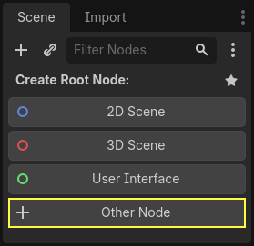
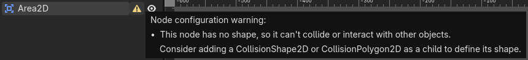
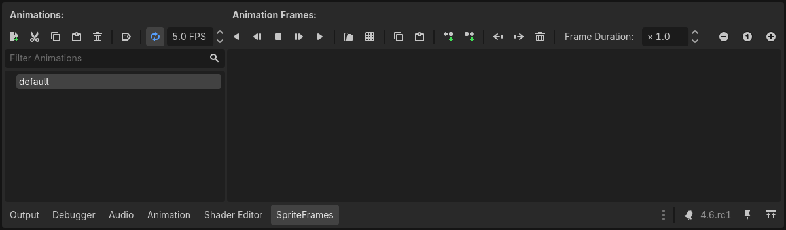
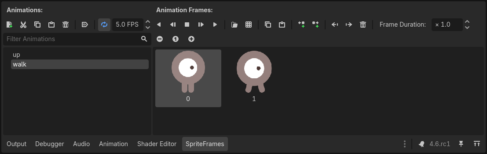
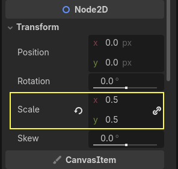
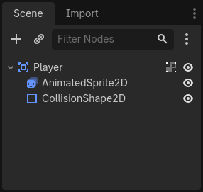

Creating the player scene
With the project settings in place, we can start working on the player-controlled character.
The first scene will define the Player object. One of the benefits of
creating a separate Player scene is that we can test it separately, even before
we've created other parts of the game.
Node structure
To begin, we need to choose a root node for the player object. As a general rule, a scene's root node should reflect the object's desired functionality - what the object is. In the upper-left corner, in the "Scene" tab, click the "Other Node" button and add an Area2D node to the scene.
Note
Godot also provides the CharacterBody2D node, specifically designed for 2D characters, which includes built-in support for some of the processes explained in this tutorial. In many real world projects, CharacterBody2D would be a better choice for players and enemies. However, this tutorial focuses on core concepts that apply to a wider range of nodes and use cases.

When you add the Area2D node, Godot will display the following warning icon
next to it in the scene tree:

This warning tells us that the Area2D node requires a shape to detect collisions or overlaps.
We can ignore the warning temporarily because we will first set up the player's visuals
(using an animated sprite). Once the visuals are ready, we will add a collision shape as a child
node. This will allow us to accurately size and position the shape based on the sprite's appearance.
With Area2D we can detect objects that overlap or run into the player.
Change the node's name to Player by double-clicking on it. Now that we've
set the scene's root node, we can add additional nodes to give it more
functionality.
Before we add any children to the Player node, we want to make sure we don't
accidentally move or resize them by clicking on them. Select the node and click
the icon to the right of the lock. Its tooltip says "Groups the selected node
with its children. This causes the parent to be selected when any child
node is clicked in 2D and 3D view."

Save the scene as player.tscn. Click Scene > Save, or press Ctrl + S
on Windows/Linux or Cmd + S on macOS.
Note
For this project, we will be following the Godot naming conventions.
GDScript: Classes (nodes) use PascalCase, variables and functions use snake_case, and constants use ALL_CAPS (See GDScript style guide).
C#: Classes, export variables and methods use PascalCase, private fields use _camelCase, local variables and parameters use camelCase (See C# style guide). Be careful to type the method names precisely when connecting signals.
Sprite animation
Click on the Player node and add (Ctrl + A on Windows/Linux or
Cmd + A on macOS) a child node AnimatedSprite2D. The AnimatedSprite2D will handle the
appearance and animations for our player. Notice that there is a warning symbol
next to the node. An AnimatedSprite2D requires a SpriteFrames resource, which is a list of the animations it can
display. Make sure AnimatedSprite2D is selected and then find the Sprite Frames property under
the Animation section in the Inspector and click "[empty]" -> "New SpriteFrames":
Click on the SpriteFrames you just created to open the "SpriteFrames" panel:

On the left is a list of animations. Click the default one and rename it to
walk. Then click the Add Animation button to create a second animation
named up.
Find the player images in the FileSystem dock - they're in the art folder
you unzipped earlier. Drag the two images for each animation, into the
Animation Frames side of the panel for the corresponding animation:
playerGrey_walk1andplayerGrey_walk2for thewalkanimationplayerGrey_up1andplayerGrey_up2for theupanimation

The player images are a bit too large for the game window, so we need to scale
them down. Click on the AnimatedSprite2D node and set the Scale property
to (0.5, 0.5). You can find it in the Inspector under the Node2D
heading.

Finally, add a CollisionShape2D as a child of
Player. This will determine the player's "hitbox", or the bounds of its
collision area. For this character, a CapsuleShape2D node gives the best
fit, so next to "Shape" in the Inspector, click "[empty]" -> "New
CapsuleShape2D". Using the two size handles, resize the shape to cover the
sprite:

When you're finished, your Player scene should look like this:

Once this is done, the warning on the Area2D node will disappear, as it now has
a shape assigned and can interact with other objects.
Make sure to save the scene again after these changes.
In the next part, we'll add a script to the player node to move and animate it. Then, we'll set up collision detection to know when the player got hit by something.